| Sepal.Length | Sepal.Width | Petal.Length | Petal.Width | Species |
|---|---|---|---|---|
| 5.1 | 3.5 | 1.4 | 0.2 | setosa |
| 4.9 | 3.0 | 1.4 | 0.2 | setosa |
| 4.7 | 3.2 | 1.3 | 0.2 | setosa |
| 5.0 | 3.3 | 1.4 | 0.2 | setosa |
| 7.0 | 3.2 | 4.7 | 1.4 | versicolor |
| 6.4 | 3.2 | 4.5 | 1.5 | versicolor |
| 6.9 | 3.1 | 4.9 | 1.5 | versicolor |
| 5.7 | 2.8 | 4.1 | 1.3 | versicolor |
| 6.3 | 3.3 | 6.0 | 2.5 | virginica |
| 5.8 | 2.7 | 5.1 | 1.9 | virginica |
| 7.1 | 3.0 | 5.9 | 2.1 | virginica |
Data Visualization
Using ggplot2
Today’s Outline
BASICS
1. Why is data visualization important?
2. Data Types, Formats, and Structures
3. Formatting your data: A tidy data discussion
BUILDING PLOTS
1. Geoms, Stats, Coordinates, and Faceting
PERCEPTION
1. Basics of cognitive visual perception
2. What makes a good graphic?
3. Aesthetics and scales in ‘ggplot2‘
POLISHING PLOTS
1. Setting themes
2. Modifying elements of a plot
3. Making plots interactive!
4. Saving your work

R knowledge rollercoaster, by Allison Horst
MOTIVATION
Why visualize?
What are graphics useful for? + Data cleaning + Exploring data structure + Communicating Information
Visualization offers an alternative way of communicating numbers
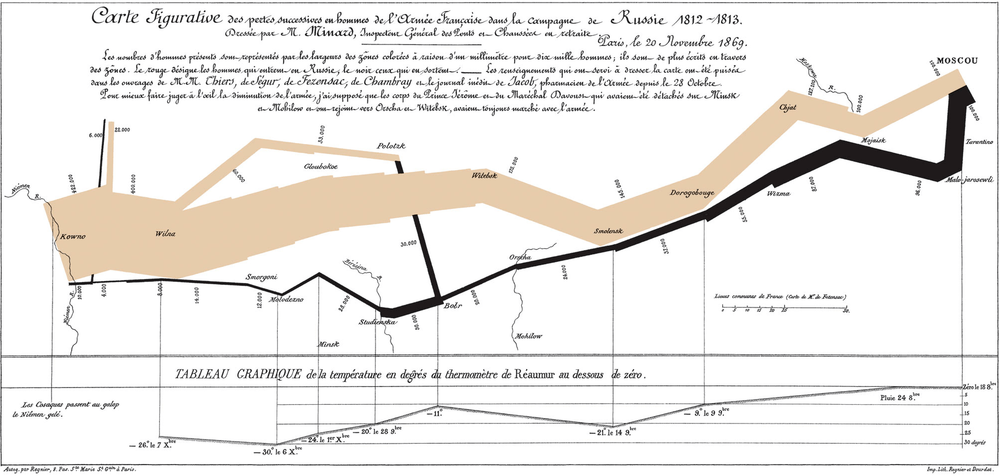
Napoleon March Map by Charles Joseph Minard
Tables and lists vs. Charts and graphs
Tables and lists vs. Charts and graphs
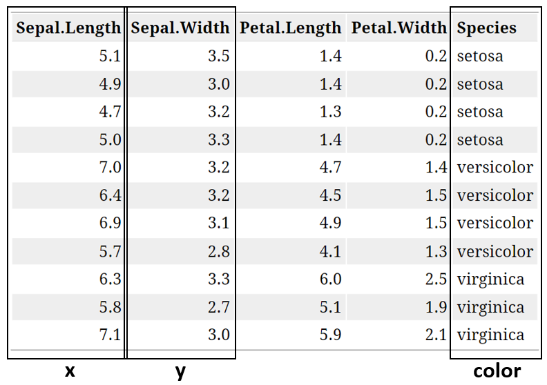
Modified Table
Tables and lists vs. Charts and graphs
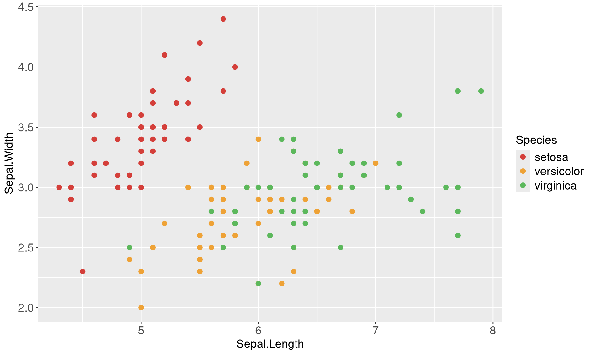
Visualizations can aid communication and make the data easier to perceive
Types of Graphs
Beginner
One Variable
- Discrete
- Bar Chart
- Pie Chart
- Continuous
- Stem and Leaf Plots
- Box and Whisker Plots
- Histograms
Two variables
- Continuous X, Continuous Y
- Scatterplots
- Maps
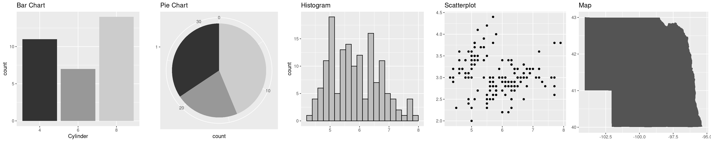
Intermediate
- Parallel Coordinate Plots
- Mosaic Plots
- Radar Charts
- Heat Maps
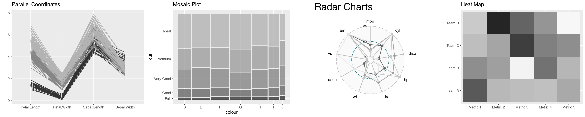
Advanced
- Density Plots
- Violin Plots
- Social Network Plots
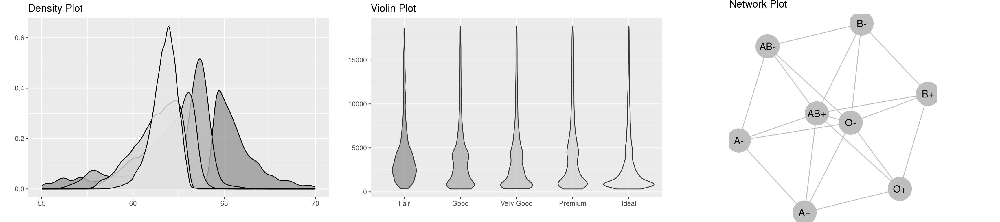
Grammar of Graphics
Grammar of Graphics
What is the grammar of graphics?
Developed by Leland Wilkinson, is a set of grammatical rules for creating perceivable graphs
Rather than thinking about a limited set of graphs, think about graphical forms
Charts are instances of much more general objects
An abstraction which makes thinking, reasoning, and communicating graphics easier
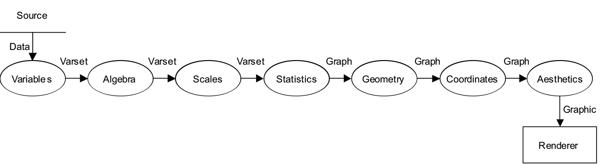
Grammar of Graphics
Different types of graphs may appear completely distinct, but in actuality share many common elements.
By making different visual choices, you can use graphs to highlight different aspects of the same data.
For example, here are three ways of displaying the same data:
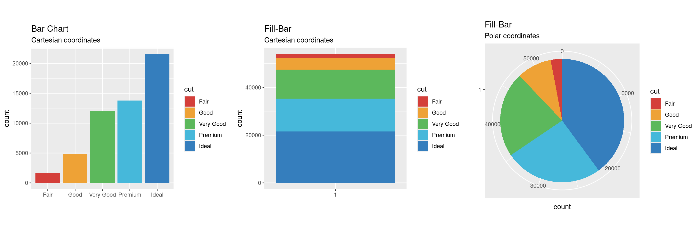
Grammar of Graphics
Statistical graphic specifications are expressed in six statements:
DATA: a set of data operations that create variables from datasets
TRANS: variable transformations
SCALE: scale transformations
COORD: a coordinate system
ELEMENT: graphs (points) and their aesthetic attributes (color)
GUIDE: one or more guides (axes, legends, etc.)
Limitations
The Grammar of Graphics…
tells us what words make up our graphical “sentences,” but offers no advice on how to write well
is not about good taste, practice, or graphic design
is useful, but is not all encompassing
does not include interactive graphics
does not include a few interesting and useful charts
ggplot2
A layered grammar of graphics
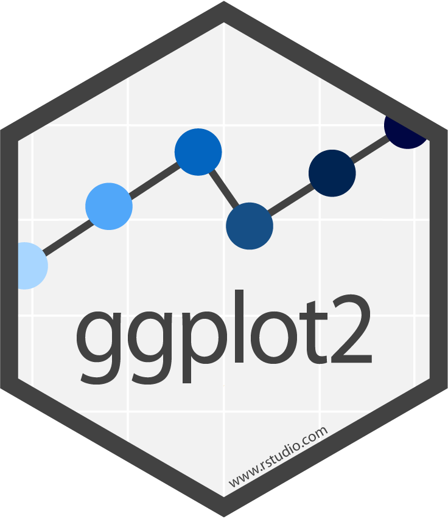
A layered grammar vs The Grammar of Graphics
ggplot2 is based on the more general concept of the Grammar of Graphics
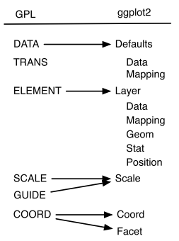
The components are independent, meaning that we can generally change a single component in isolation
What is a graphic?
ggplot2 uses the idea that you can build every graph with graphical components from three sources
the data, represented by geoms
the scales and coordinate system
the plot annotations
- to display values, map variables in the data to visual properties of the geom (aesthetics) like size, color, and x and y locations
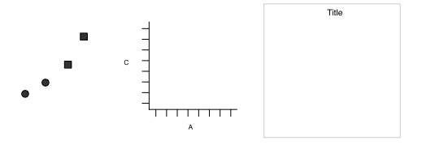
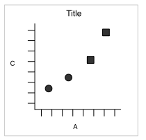
ggplot2: A layered grammar
The layered grammar defines the components of a plot as:
a default data set and set of mappings from variables to aesthetics
one or more layers, each layer having one geometric object, one statistical transformation, one position adjustment, and optionally, one data set and set of aesthetic mappings
one scale for each aesthetic mapping used
a coordinate system
the facet specification
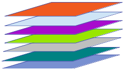
What is a Layer?
it determines the physical representation of the data
a plot may have multiple layers
- usually all the layers on a plot have something in common, i.e. different views of the same data
a layer is composed of four parts:
- data and aesthetic mapping
- a statistical transformation (stat)
- a geometric object (geom)
- a position adjustment
ggplot2: Specifications
A plot consists of several mostly independent specifications:
- aesthetics - links between data variables and graphical features (position, color, shape, size)
- layers - geometric elements (points, lines, rectangles, text, …)
- transformations - transformations specify a functional link between the data and the displayed information (identity, count, bins, density, regression). Transformations act on the variables.
- scales - scales map values in data space to values in the aesthetic space. Scales change the coordinate space of an aesthetic, but don’t change the underlying value (so the change is at the visual level, not the mathematical level).
- coordinate system - e.g. polar or Cartesian
- faceting - facets allow you to split plots by other variables to produce many sub-plots.
- theme - formatting items, such as background color, fonts, margins…
ggplot2: A layered grammar

data: diamonds
layer:
- aes: x = cut, y = count, fill = cut
- geom: bar
coordinates: Cartesian
data: diamonds
layer:
- aes: x = 1, y = count, fill = cut
- geom: fill-bar
coordinates: Cartesian
data: diamonds
layer:
- aes: x = 1, y = count, fill = cut
- geom: fill-bar
coordinates: Polar
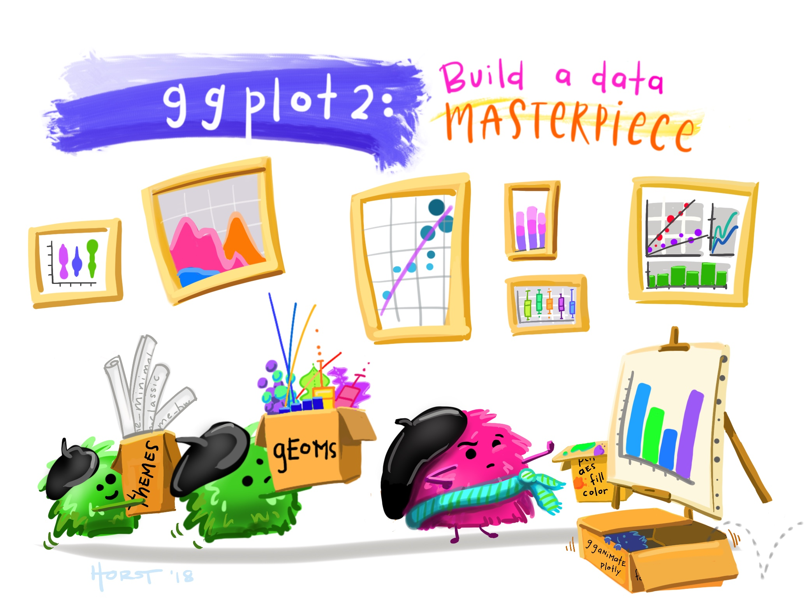
Building a masterpiece, by Allison Horst
Make your first figure
R package and data set
| carat | cut | color | clarity | depth | table | price | x | y | z |
|---|---|---|---|---|---|---|---|---|---|
| 0.23 | Ideal | E | SI2 | 61.5 | 55 | 326 | 3.95 | 3.98 | 2.43 |
| 0.21 | Premium | E | SI1 | 59.8 | 61 | 326 | 3.89 | 3.84 | 2.31 |
| 0.23 | Good | E | VS1 | 56.9 | 65 | 327 | 4.05 | 4.07 | 2.31 |
| 0.29 | Premium | I | VS2 | 62.4 | 58 | 334 | 4.20 | 4.23 | 2.63 |
| 0.31 | Good | J | SI2 | 63.3 | 58 | 335 | 4.34 | 4.35 | 2.75 |
| 0.24 | Very Good | J | VVS2 | 62.8 | 57 | 336 | 3.94 | 3.96 | 2.48 |
Begin with the data
Then specify aesthetic mappings
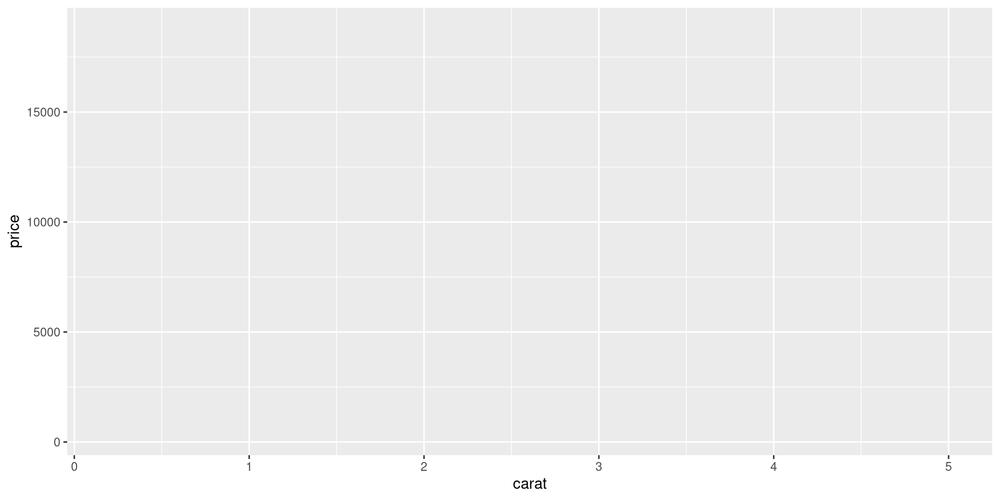
Choose a geom
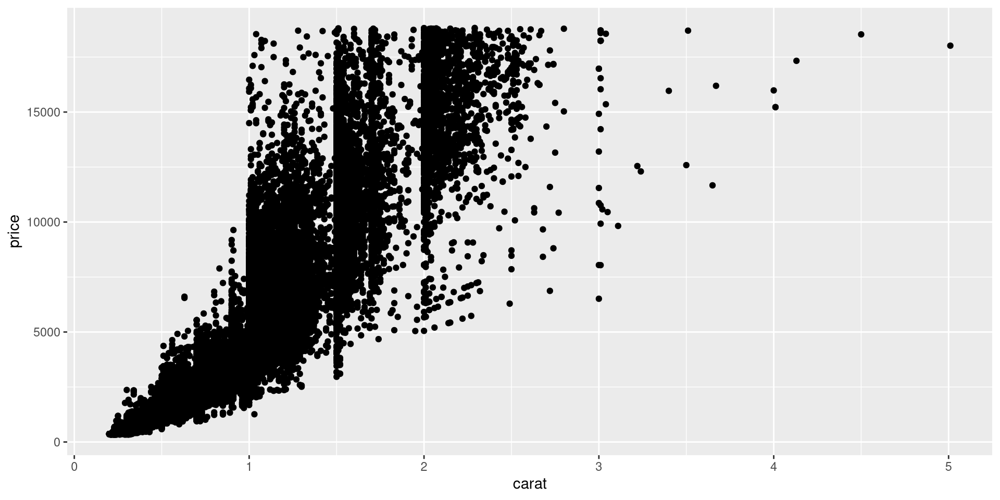
Add geom-specific aesthetics
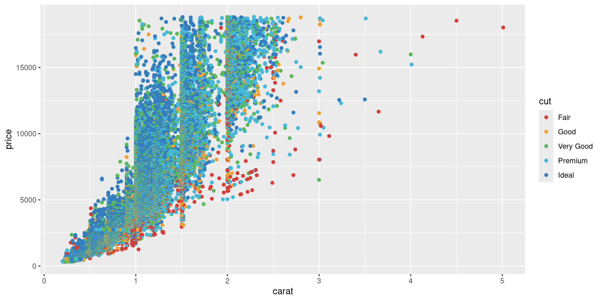
Add another layer…
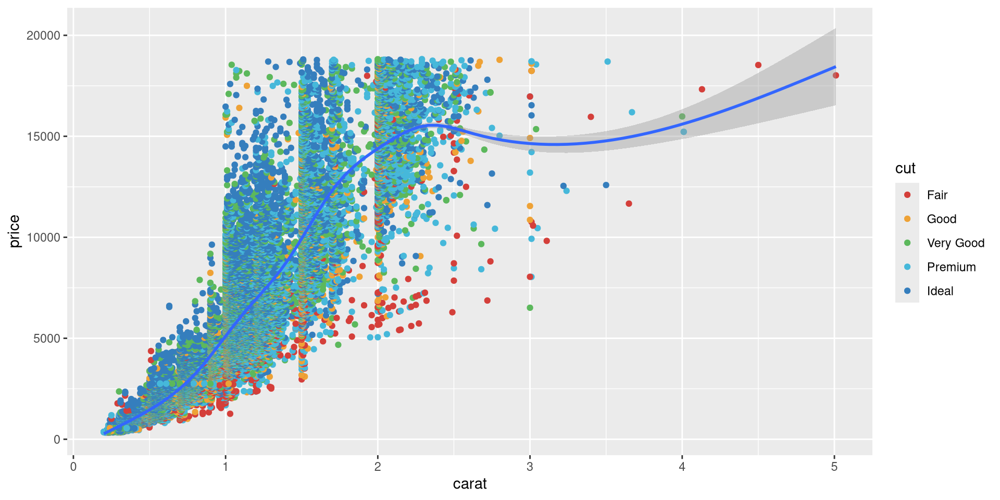
Mapping vs setting aesthetics
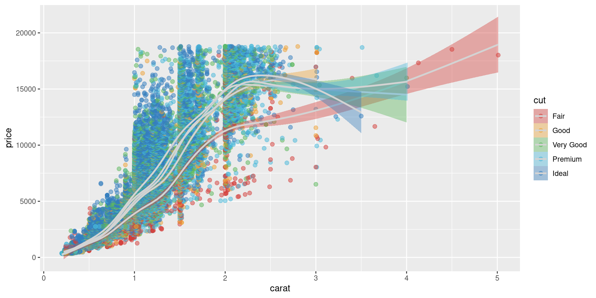
Specify Coordinate transformations
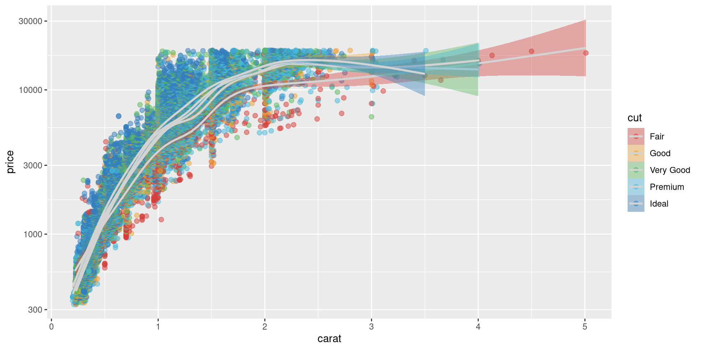
Add nuance with facets
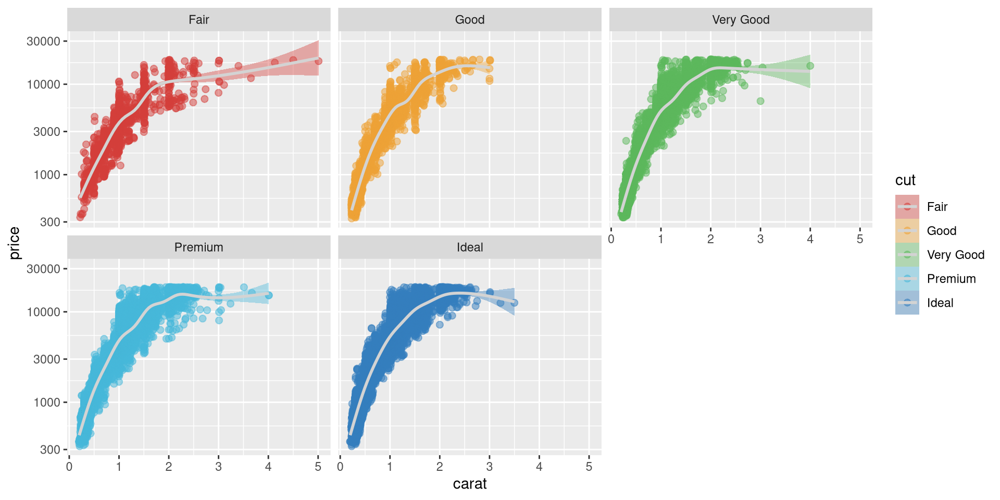